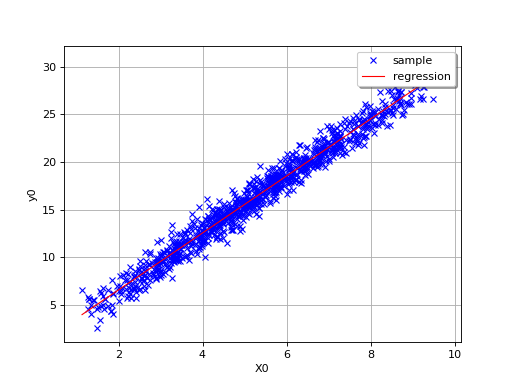
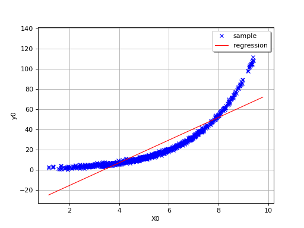
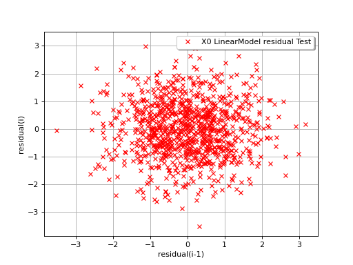
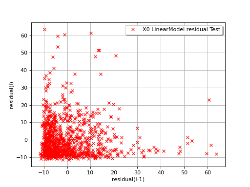

Linear regression¶
This method deals with the parametric modelling of a probability
distribution for a random vector
 . It aims to measure
a type of dependence (here a linear relation) which may exist between a
component
. It aims to measure
a type of dependence (here a linear relation) which may exist between a
component  and other uncertain variables
and other uncertain variables  .
.
The principle of the multiple linear regression model is to find the
function that links the variable to other variables
 ,…,
,…, by means of a linear model:
by means of a linear model:
![\begin{aligned}
X^i = a_0 + \sum_{j \in \{ j_1,\ldots,j_K \} } a_j X^j + \varepsilon
\end{aligned}]()
where  describes a random variable with zero mean
and standard deviation
describes a random variable with zero mean
and standard deviation  independent of the input variables
. For given values of ,…,,
the average forecast of is denoted by
independent of the input variables
. For given values of ,…,,
the average forecast of is denoted by  and is defined as:
and is defined as:
![\begin{aligned}
\widehat{X}^i = a_0 + \sum_{j \in \{ j_1,\ldots,j_K \} } a_j X^j
\end{aligned}]()
The estimators for the regression coefficients
 , and the
standard deviation are obtained from a sample of
, and the
standard deviation are obtained from a sample of
 , that is a set of
, that is a set of  values
values
 ,…,
,…, .
They are determined via the least-squares method:
.
They are determined via the least-squares method:
![\begin{aligned}
\left\{ \widehat{a}_0,\widehat{a}_1,\ldots,\widehat{a}_{K} \right\} = \textrm{argmin} \sum_{k=1}^n \left[ x^i_k - a_0 - \sum_{j \in \{ j_1,\ldots,j_K \} } a_j x^j_k \right]^2
\end{aligned}]()
In other words, the principle is to minimize the total quadratic
distance between the observations  and the linear forecast
and the linear forecast
 .
.
Some estimated coefficient  may be close to
zero, which may indicate that the variable
may be close to
zero, which may indicate that the variable  does not
bring valuable information to forecast . A classical statistical
test to identify such situations is available: Fisher’s test.
For each estimated coefficient , an important
characteristic is the so-called “
does not
bring valuable information to forecast . A classical statistical
test to identify such situations is available: Fisher’s test.
For each estimated coefficient , an important
characteristic is the so-called “ -value” of Fisher’s test. The
coefficient is said to be “significant” if and only if
-value” of Fisher’s test. The
coefficient is said to be “significant” if and only if
 is greater than a value
is greater than a value
 chosen by the user (typically 5% or 10%). The higher the
-value, the more significant the coefficient.
chosen by the user (typically 5% or 10%). The higher the
-value, the more significant the coefficient.
Another important characteristic of the adjusted linear model is the
coefficient of determination  . This quantity indicates the
part of the variance of that is explained by the linear
model:
. This quantity indicates the
part of the variance of that is explained by the linear
model:
![\begin{aligned}
R^2 = \frac{ \displaystyle \sum_{k=1}^n \left( x^i_k - \overline{x}^i \right)^2 - \sum_{k=1}^n \left( x^i_k - \widehat{x}_k^i \right)^2 }{ \sum_{k=1}^n \left( x^i_k - \overline{x}^i \right)^2 }
\end{aligned}]()
where  denotes the empirical mean of the sample
denotes the empirical mean of the sample
 .
.
Thus,  . A value close to 1 indicates a good fit
of the linear model, whereas a value close to 0 indicates that the
linear model does not provide a relevant forecast. A statistical test
allows one to detect significant values of . Again, a
-value is provided: the higher the -value, the more
significant the coefficient of determination.
. A value close to 1 indicates a good fit
of the linear model, whereas a value close to 0 indicates that the
linear model does not provide a relevant forecast. A statistical test
allows one to detect significant values of . Again, a
-value is provided: the higher the -value, the more
significant the coefficient of determination.
By definition, the multiple regression model is only relevant for linear
relationships, as in the following simple example where
 .
.
(Source code, png)
{kind=link}

In this second example (still in dimension 1), the linear model is not
relevant because of the exponential shape of the relation. But a linear
approach would be useful on the transformed problem
 . In other words, what is important is
that the relationships between and the variables
,…, is linear with respect to the
regression coefficients
. In other words, what is important is
that the relationships between and the variables
,…, is linear with respect to the
regression coefficients  .
.
(Source code, png)
{kind=link}

The value of is a good indication of the goodness-of fit of
the linear model. However, several other verifications have to be
carried out before concluding that the linear model is satisfactory. For
instance, one has to pay attentions to the “residuals”
 of the regression:
of the regression:

A residual is thus equal to the difference between the observed value
of and the average forecast provided by the linear model. A
key-assumption for the robustness of the model is that the
characteristics of the residuals do not depend on the value of
 : the mean value should be close
to 0 and the standard deviation should be constant. Thus, plotting the
residuals versus these variables can fruitful.
: the mean value should be close
to 0 and the standard deviation should be constant. Thus, plotting the
residuals versus these variables can fruitful.
In the following example, the behavior of the residuals is satisfactory: no particular trend can be detected neither in the mean nor in he standard deviation.
(Source code, png)
{kind=link}

The next example illustrates a less favorable situation: the mean value
of the residuals seems to be close to 0 but the standard deviation tends
to increase with  . In such a situation, the linear model should
be abandoned, or at least used very cautiously.
. In such a situation, the linear model should
be abandoned, or at least used very cautiously.
(Source code, png)
{kind=link}
